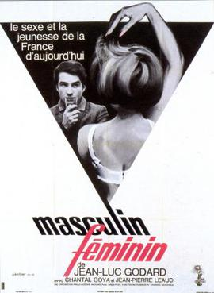

Jean-Luc Godard
1966
110 minutes
TITLE: Masculin Feminin TEXT PLACEHOLDER 202
This is a very Godard-feeling film that has Jean-Pierre Léaud in one of the lead roles along with yé-yé singer Chantal Goya. Again with Godard the plot is a mere accessory and isn't the point as much as everything else is. This film is full of weird slightly surreal shit and place-setting and characters breaking the fourth wall to let you know what's on their minds in bizarre ways. The increasingly unhinged extremely violent background events are almost a running gag in the film, with random bystanders shooting each other or stabbing or immolating themselves right after interacting with the characters. All of this seems meant to give you the idea that the characters are living in rather troubling and confusing times. And of course there are random cameos by luminaries such as Francoise Hardy and Brigitte Bardot.
The characters go about their business of impregnating each other and having arguments about Marxism and consumerism and Vietnam and birth control. There are lots of intertitles and wordplay and other goofy shit. The film reads almost as much as a faux-documentary telling the story of the time it was shot in than it does any kind of real story, and only Godard could pull off something like this so gracefully.
The unhinged background events frankly make the film. It's the same feeling you get some days walking around Baltimore. It always feels like you're on the verge of stumbling across idiotic arguments by deranged citizens on the street that are a perfect sign of the times. Linger anywhere too long and pay too much attention and someone in the background will take their turn as the main character for a few minutes. They'll go from picking up partially smoked cigarette butts on the sidewalk to suddenly bursting into song or some soliloquy about how Johns Hopkins done them wrong and then throwing a punch at another random bystander. Anything can happen if you stand still long enough on the corner of Charles and North near where Liam Flynn's pub used to be. Someone will ride by on a horse. A trike will thunder by with gospel music blaring at bone-shattering volumes. Someone will stop and try to sell you a box turtle. Someone will half-heartedly try to mug you before giving up mid-sentence and wandering off. Another person will go around table to table inside the bar trying to sell postage stamps. A bull that escaped the slaughterhouse down the street will trot down the sidewalk before being chased down and shot by the police with a rifle. Yet another person will ride down the street on a bicycle with a vacuum cleaner balanced on the handlebars and stop and try to sell you the vacuum cleaner for five dollars and they'll even throw in two broken umbrellas and a Swiffer. Someone will try to buy drugs off you since you look like you might be holding. Someone will find it hilarious that you're standing on the street corner eating Utz Chips and cradling a chicken box under your arm because you look like a Baltimore stereotype.
You could make an entire film about Baltimore by starting to make a film about Baltimore and then never bothering to tell the story, which is often the worst part. You wish more people would attempt this.
Time to choose something different: